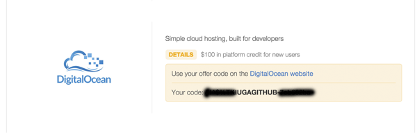

Using a private secure VPN connection allows you to access the Internet securely and encrypted, prevent from eavesdropping on public networks.
This tutorial is only intended to help you encrypt your traffic when browsing on a public insecure network.
However, connections will now appear to have been initiated from your server. If you conduct illegal activities, such as P2P distribution of copyright files, or sending unsolicited e-mail messages, your server provider may receive complaints. The complaints will be forwarded to you, and may cause consequences. Some other illegal activities may warrant investigations from law enforcements. Please make sure that you only use it for legal purposes (encrypting your traffic), and proceed at your own risk.
GitHub offers an Education Pack for students from HE institutions.
Visit https://education.github.com/
Click "Get the Pack"
Click "Get your Pack"
If you already have a GitHub account, log in. Otherwise, register one in another tab, and return to here to login.
Click "Yes, I'm a student".
Fill in your information.
If your account is not registered with (or connected with) a .ac.uk or .edu email address, you need to use "add and verify it" to verify your education email address.
After that, choose your .ac.uk or .edu email address to register.
After finished registration, go back to https://education.github.com/, click "Get your Pack"

You can request your DigitalOcean promo code from here.
Go to https://www.digitalocean.com/, register an account. You don't have to use your education email address.
Go to "Billing" -> "Manage Payments".
You need to either authorise a credit / debit card (note: you are billed in USD, check with your bank for foreign currency fee if you want to use your card),
or use Paypal to make a one-time payment of 5 USD. Then you will be able to use your promotion credit.
After the payment it done, enter the promo code you obtained earlier.
Now you have the credit! Use the big "Create" button.
Give your VM a hostname, select the $5/month plan. You should be able to use it for 20 months.
You can use London location as it's the closest, but other locations will also do, as you may prefer other legislations.
Choose to get IPv6 and private networking. They are not useful in this tutorial, but may be useful later should you wish to get more out of your VM.
You can find the launched VM at "Droplets" menu. Unless you opted to use a SSH key authentication, the root password will be sent to your account email address.
Now the registration is done. Copy down the IP address of your new VM, as well as the root password from the email.
We now need to SSH access your VM.
If you are using Windows, you need a SSH client, such as Putty.
If you are using Linux, OS X, BSD or any other Unix-like, you already have a nice Terminal on your environment, find it.
Windows connect: Server address is the IP address of your VM, port by default is 22, password is your root password.
Anything else: ssh root@IP-OF-YOUR-VM
To install a IPSec VPN server on our Ubuntu 14.04, follow the tutorial below:
Cisco IPSec (IKEv1) compatible VPN works on most devices, easy to config on OS X, iOS and Android, but needs a client like Shrew VPN Client (Standard Version free) on Windows.
passwd rootAnd change the root password to a long and complicated string. At least 20 in length, with a mix of digits, upper and lower case letters, and symbols.
apt-get install vim ipsec-tools racoon -yWhen prompted, select "direct" mode for racoon.
cd /etc/racoon/ mv racoon.conf racoon.conf.old vim racoon.confI have prepared a premade config (http://pastebin.com/9FdYi3iQ). Change "CHANGE-THIS-TO-YOUR-SERVER-IP" to the IP address of your server, and change the DNS server if you need to.
vim psk.txtUse "dd" repeatedly to remove everything already in there, and "i", add a line like the following:
Now, add a user for vpn connection. We have used system authentication earlier in the config, to make things simpler. Racoon supports other authentication methods, and you can explore them later.
useradd -s /sbin/nologin vpnuser passwd vpnuserAnd set a password for the user. You can change "vpnuser" to another username you like. /sbin/nologin prevents it from logging into Linux shell and see your files.
vim /etc/sysctl.conf #Remove the "#" in front of "net.ipv4.ip_forward=1" sysctl -p /sbin/iptables --table nat --append POSTROUTING --jump MASQUERADE vim /etc/rc.local #add the line starting with "/sbin/iptables" before the "exit 0", so the iptables command is ran at startup
service racoon restart